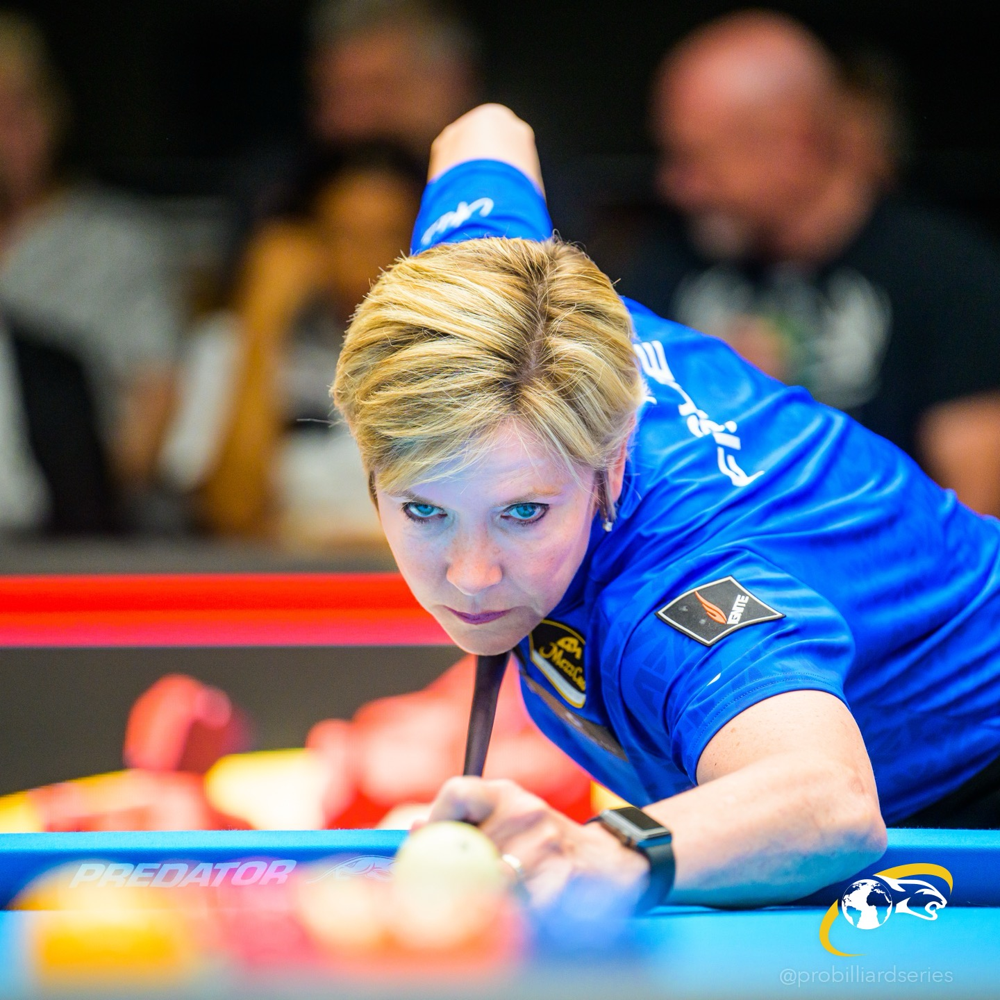
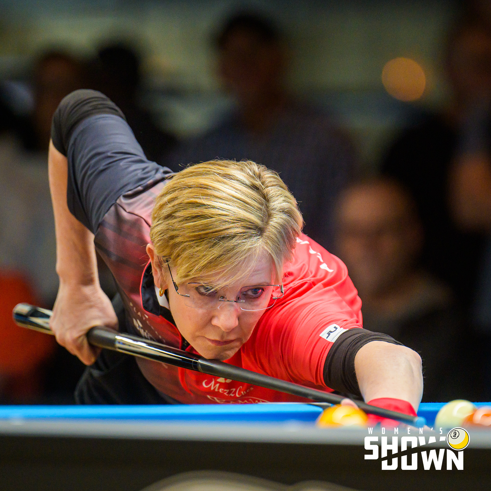
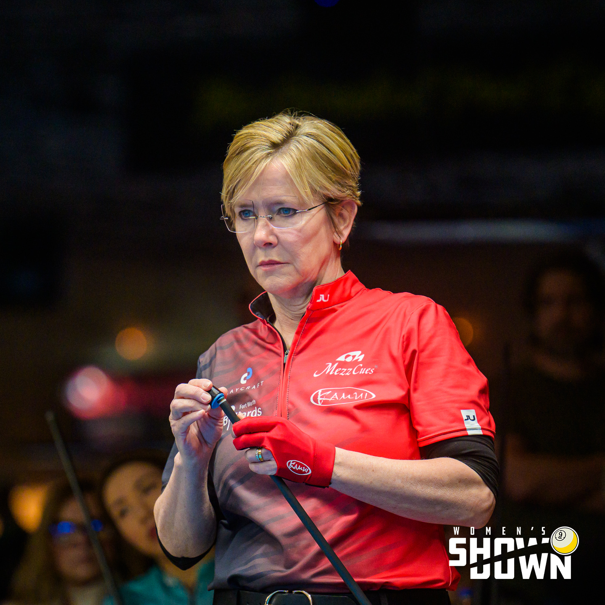
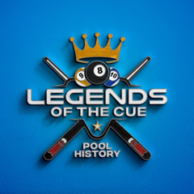

11× World Champion
World titles across snooker and pool, reflecting rare excellence in multiple cue-sport disciplines.
WORLD CHAMPION • COACH • COMMENTATOR
One of the most accomplished champions in cuesport history — now sharing a lifetime of knowledge through coaching, commentary, media and storytelling.
THE STORY
Allison Fisher MBE is one of the most accomplished and influential figures in world cuesports.
Originally from England, Allison rose to prominence as a dominant force in women’s snooker before moving to the United States in 1995 and establishing an extraordinary professional pool career. Her precision, composure and relentless pursuit of excellence earned her the nickname “The Duchess of Doom.”
Today, Allison continues to contribute to the sport through coaching, commentary, media, personal appearances and the preservation of pool history.

CAREER HIGHLIGHTS
World titles across snooker and pool, reflecting rare excellence in multiple cue-sport disciplines.
A championship résumé spanning major events, tours and international competition.
Awarded Member of the Order of the British Empire for services to sport.
Honored by the World Snooker Hall of Fame, WPBA Hall of Fame, World Billiard Museum Hall of Fame and Billiard Congress of America Hall of Fame.
HALL OF FAME HONORS
Allison Fisher MBE has been honored by major institutions celebrating excellence and lasting contributions across snooker and pool.
COMPETITION & MEDIA
Allison brings an elite player’s eye, decades of competitive experience and clear communication to commentary, interviews and live events.


COACHING & CLINICS
Private instruction, group clinics and intensive pool schools built around fundamentals, decision-making and competitive performance.
Great players keep learning. Great coaches help you see what you can’t see on your own.Allison Fisher MBE

LEGENDS OF THE CUE
Allison’s podcast celebrates the people, moments and journeys that shaped the game.
Through timeless conversations with champions, innovators and personalities from the pool world, Legends of the Cue records stories that deserve to be remembered.
PRESS & BOOKINGS
Download Allison’s official press kit for biography, career highlights, photographs and booking information.
BRAND AMBASSADORSHIPS
Proud to serve as a brand ambassador for respected names within the billiards and cuesports community.
OFFICIAL SHOP
Shop official Allison Fisher merchandise, cue-sport products and special releases.
Powered by Shopify
Apparel, accessories and Allison Fisher branded products.
CONTACT
For speaking, coaching, commentary, media, appearances, sponsorships and collaborations:
info@allisonfisher.com